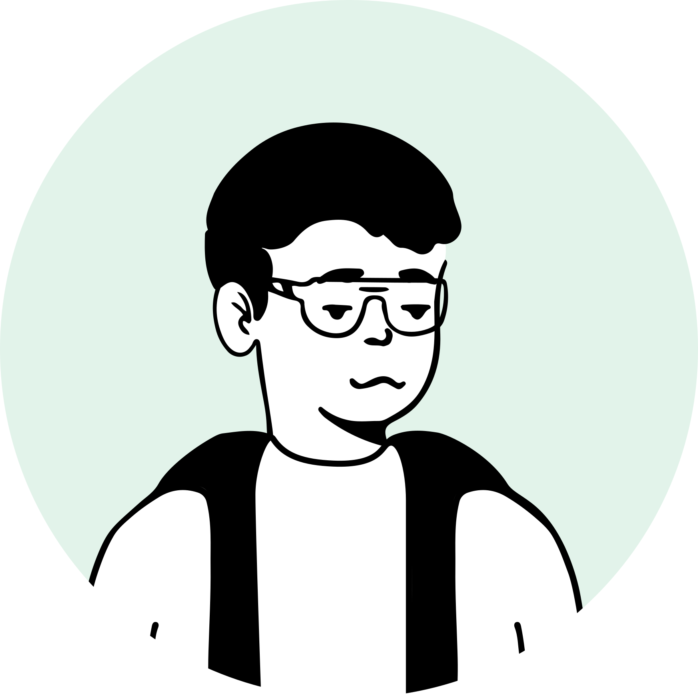
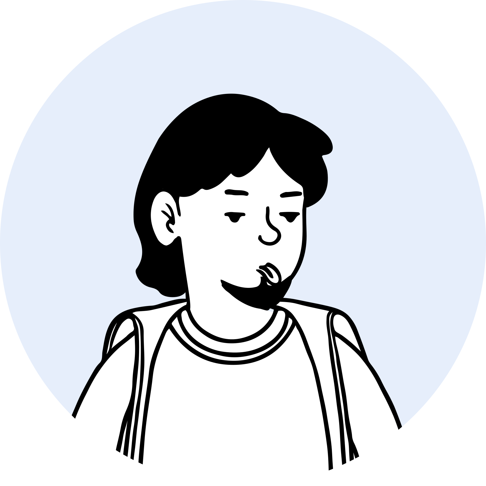
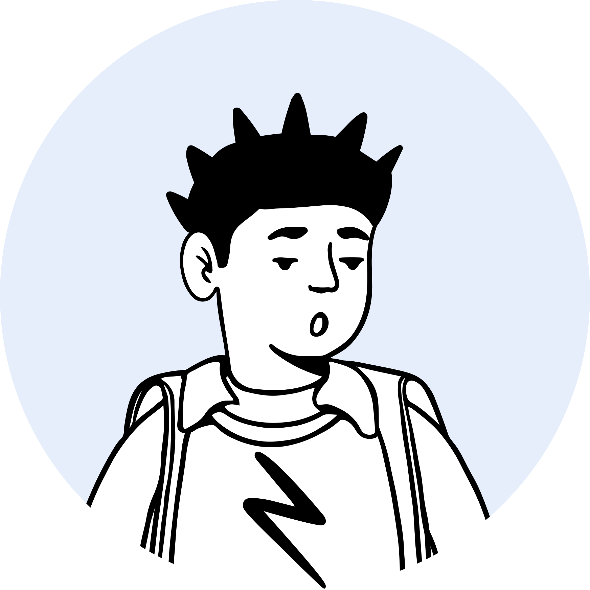
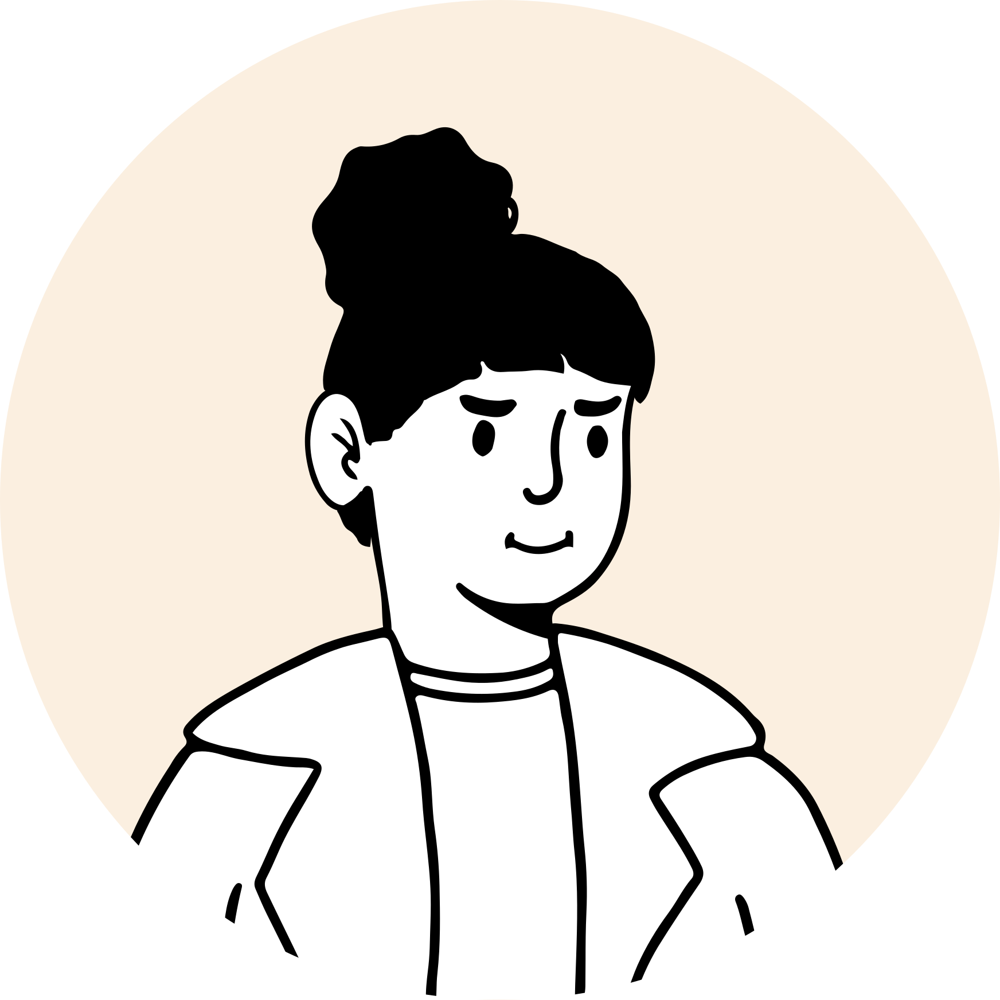
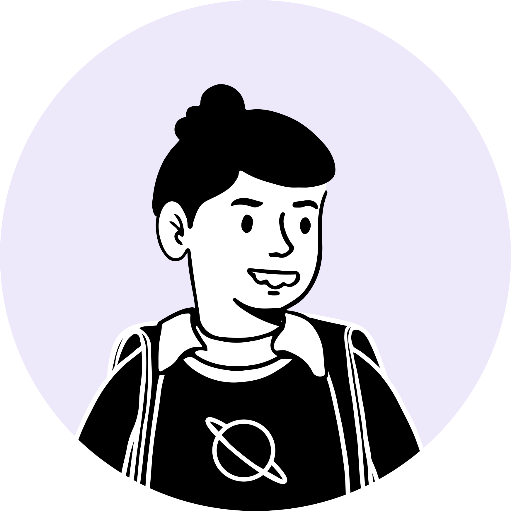
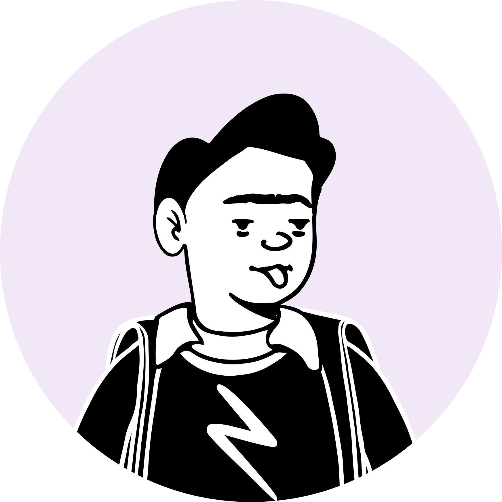

智能报错诊断、环境一键就绪、统一错误码库是低成本、高回报的「快赢」——直击开发者最高频的报错与环境痛点，应当最先落地。
跨工具数据联动、可视化调试、增量编译加速价值最高，但链路长、成本高，列为「重点投入」分阶段推进；文档补全、国产卡深度适配性价比偏低，按资源顺手做或暂缓。
以开发者为核心，由内向外是 工作台 → 研发团队 → 工具生态 → 外围干系人；平台方(优先自家产品)与开发者(训练效率优先)价值取向不一致，叠加下列痛点，造成开发体验落差。
30 名一线算子工程师 7 天的打卡显示，调试定位 35%、性能调优 28%——两项合起来吃掉了一天里 6 成多的精力。
真正编码的时间只有 12%，剩下的耗在环境配置、文档查阅、评审与联调这些"代码之外"的事情上。
D / E / M 位列差值前三。
多版本树并存，首选入口不清。
D 核心 how-to 抓取不足。
E 有页面，但原因和修复路径泛化。
少数任务失败后要换词和补证。
有效互证平台偏少。
检索受阻后缺少记忆兜底。
入口、推荐版本和配套依赖散在多处，首选路线需要用户自行判断。
Agent 或开发者能读到片段，却缺少完整步骤、预期输出和失败处理。
Ascend C、Tiling、错误码分散在多页，缺少从问题到验证的任务包。
论坛、工单、搜索词和案例没有稳定反哺文档与示例仓。
给首选网址、当前推荐版、配套查询和稳定 URL。
llms.txt、Markdown、结构化索引、可抓取正文形成稳定入口。
围绕 D/E/M 把概念、步骤、代码、验证、常见坑打包。
官方论坛、GitCode、英文社区和技术博客形成多源互证。
用一张卡说明判断来自用户反馈、数据指标、访谈原声或竞品观察。
把影响讲清楚：它如何影响信任、效率、留存，或让后续方案有明确方向。
卡片不抢主结论，只把目标落到降低等待、提升掌控感、建立可预期反馈。
白卡承载中性事实、前提或已有证据。
蓝紫主题卡承载这一页最值得被记住的变化。
深色卡只给最终判断、目标或必须执行的动作。
中性事实与现状。
需要被优先关注。
最终判断与动作。
解释边界、条件或后续。
从数据和原声中找到信号。
收束成可比较的机会。
看清断点发生在哪里。
把发现转成设计原则。
落实为近期可执行任务。
靛蓝用于产品主调和主 accent；紫留给策略与创新主题。仅颜色不足且语义确实不同时并用。
红代表风险、阻断和异常；玫红用于用户感受或人物主题。需要一眼区分时，优先换成橙或粉。
橙用于提醒，琥珀用于进行中，黄只做轻量标记；大段文字或整面卡不使用黄色。
绿给完成与收益，薄荷给机会与改善。需要第二个冷色时，优先加入青或蓝而不是再加近似绿。